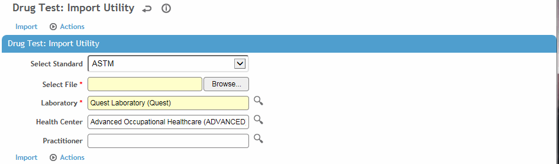

Importing Records Directly from Quest Diagnostics
You can import test results of the following format standards: ASTM, LabCorp, Medtox, Quest, or a Source HL7v23 lab file. Optionally specify the default import standard in the ”Drug Sample Import Format” system setting (see Changing Your System Settings).
In the Occupational Health menu, click Drug Testing.
On the Drug Tests list, choose Actions»Import Results.

Select or change the import Standard.
Select the Laboratory the results are being imported from. If using LabCorp, also select the Drug Testing Battery.
Optionally, identify the Health Center and Practitioner.
Click Browse to locate the test results file, then click Import to add the test results to the employees’ records.
If there are two employees with the same SSN but with different employee numbers, and only one of the employees is active, the drug test results will be imported for the active employee only. Additional validation is provided by several system settings:
“Validate Date of Birth for HL7 Drug Test Imports” ensures that the date of birth in the HL7 file matches the date of birth on an existing drug test record in Cority
“Validate Last Name for [ASTM/HL7] Drug Test Imports” ensures that the last name in the HL7 file matches the last name on an existing drug test record in Cority
“Validate Specimen ID for HL7 Drug Test Imports” ensures that the Specimen ID in the HL7 file matches the Specimen ID on an existing drug test record in Cority
“ID to Match for Import of Drug Tests” defines the type of ID that imports should be matched to (employee number, SSN, or Medical Insurance Number).
Some records may not be imported due to errors in the source data, e.g. if the employee number is not found. To view the list of test results, including these rejected records, choose Actions»Process Status and Log. For each rejected record, the Process Log will display a reason for rejection.
Rejected records as a result of incorrect data in the import file can be corrected directly in Cority. Once corrected, choose Actions»Reprocess to reprocess all rejected records and add them to the database. It is important to view the log again to be sure all records have been saved.
If an imported test includes a unit of measure that does not exist in the UnitsOfMeasure look-up table, the test will be imported and the unit of measure will be added to the table.
Setting up the connection:
Define the appropriate values for the Quest Drug Testing system settings:
Login Name and Password
Server, Port Number and Results File Directory - obtain from Quest Diagnostics
Notification Email - this is the email address at which you want to receive email notifications about imports into Cority from Quest Diagnostics.
Importing the results:
Log into Cority, then in another browser tab type:
<your Cority domain>/questdrugimport/doimport.rails
and press Enter.
An administrator can set up a task using Windows Task Scheduler that will trigger Cority to automatically import test results from Quest Diagnostics at regular intervals.
A business rule can automatically populate the record with the health center from the employee’s last clinic visit.